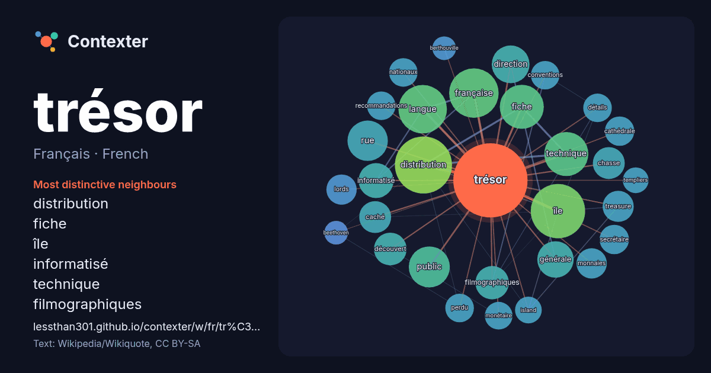

Français · French · word of the day list
trésor
“treasure” · The words found around it in 1301 instances from French Wikipedia, Wikiquote.

Most distinctive neighbours
- distribution 41×
- fiche 38×
- île 34×
- informatisé 25×
- technique 25×
- filmographiques 23×
- langue 21×
- treasure 20×
- caché 19×
- conventions 16×
- générale 16×
- recommandations 16×
- chasse 16×
- public 16×
- française 16×
- monnaies 16×
- lords 16×
- détails 15×
- monétaire 15×
- nationaux 14×
× = how many times more often than in general French Wikipedia text.
Most frequent neighbours
- distribution 64
- île 58
- française 48
- langue 46
- fiche 38
- technique 38
- public 33
- rue 32
- direction 28
- film 27
- france 27
- générale 26
- informatisé 24
- national 24
- titre 24
- carte 22
- filmographiques 22
- découvert 21
- caché 20
- chasse 20
In context
- Un trésor, dans sa signification la plus courante, est un ensemble d'objets réunis sous la forme d'un dépôt protégé ou caché. Le fait que le trésor soit Wikipedia snippets · Trésor
- (bande dessinée). Pour les articles homonymes, voir L'Île au trésor (homonymie). L'Île au trésor (Treasure Island) est un roman d'aventures de Robert Louis Wikipedia snippets · L'Île au trésor
- général, voir Trésor de la langue française. Ne doit pas être confondu avec Centre national de ressources textuelles et lexicales. Le Trésor de la langue Wikipedia snippets · Trésor de la langue française informatisé
- Pour les articles homonymes, voir Trésor (homonymie). Bryan Trésor Bryan Trésor, né le 1er mai 1997 à Cannes, est un acteur francais. Il est surtout connu Wikipedia snippets · Bryan Trésor
- qui met la main sur la Carte au Trésor revient à l'émission suivante et ce, qu'elle réussisse ou non à remporter le trésor. L'émission a connu principalement Wikipedia snippets · La Carte aux trésors
- la mission fiscale et monétaire du Trésor relève en général du ministère des Finances. L'administration du Trésor peut également être organisée de manière Wikipedia snippets · Trésor public
- Direction générale du Trésor et de la Comptabilité publique. Direction générale du Trésor La direction générale du Trésor (ou DG Trésor) est une direction Wikipedia snippets · Direction générale du Trésor
- Un bon du Trésor est un titre d'emprunt émis par l’État et remboursable à échéance. Les bons du Trésor sont des titres obligataires (c'est-à-dire des titres Wikipedia snippets · Bon du Trésor
More French words
Precomputed on 2026-10-09 with default settings (±5 words, medium corpus). The interactive map can refresh it with live data.